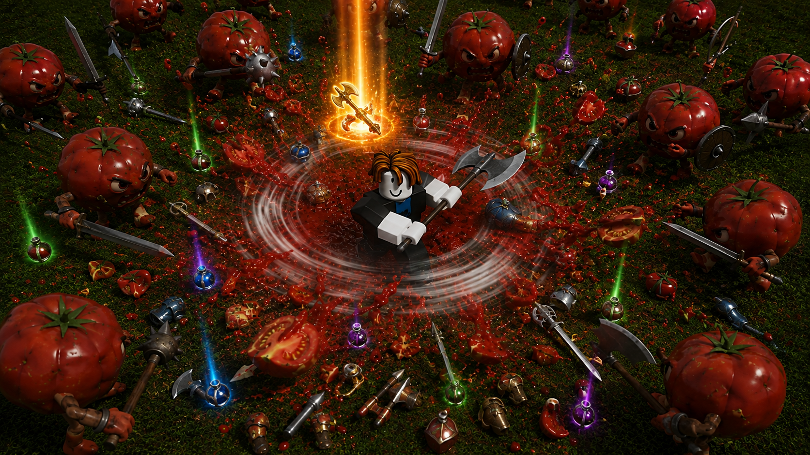
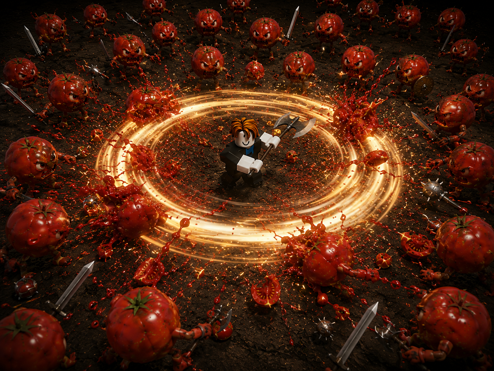
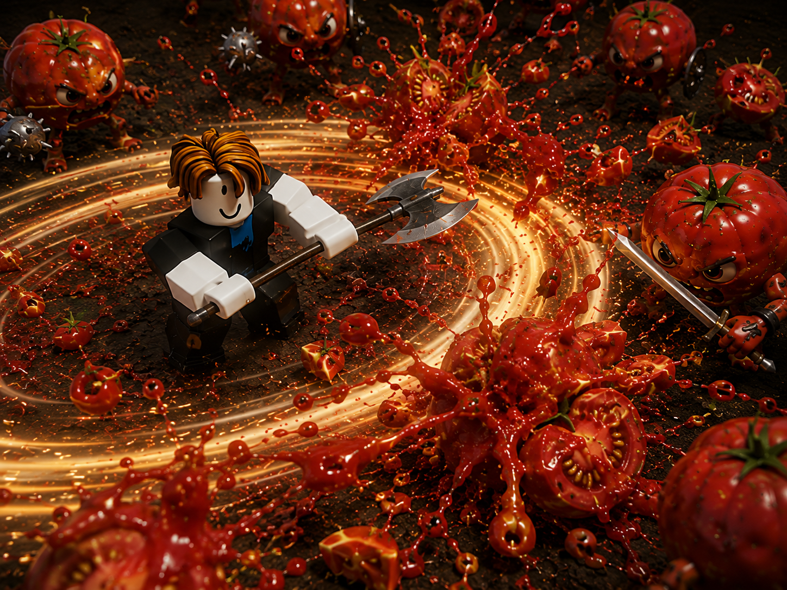
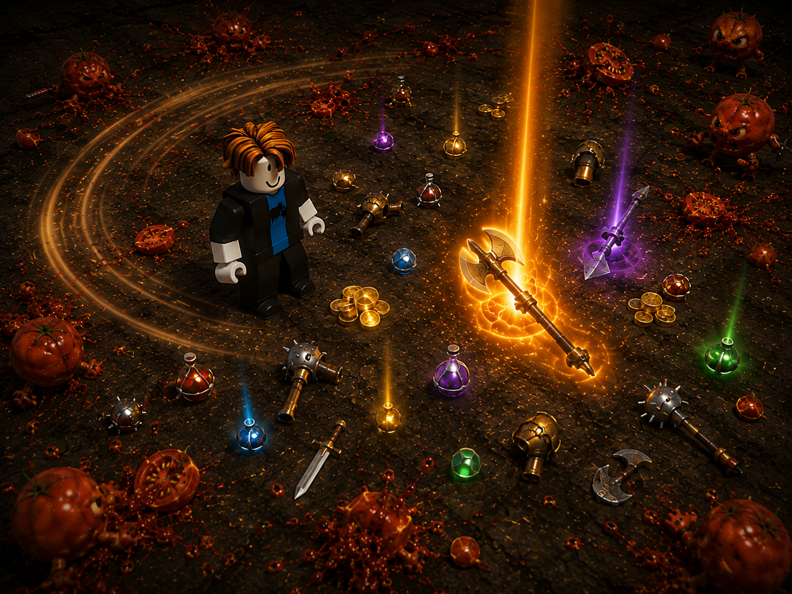
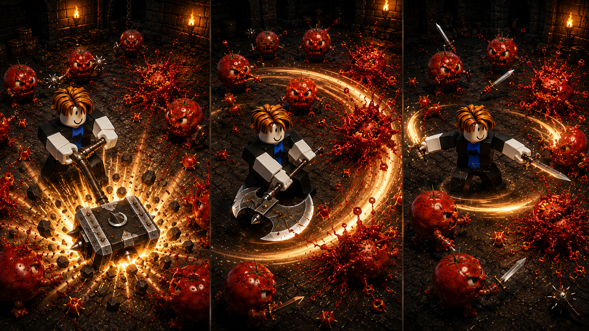

ROBLOX JUMPSTART PROPOSAL
TOMATO
SPLATTER
직접 조작과 자동 전투를 넘나들며 토마토 무리를 쓸어버리고, 쏟아지는 전리품으로 나만의 장비 조합을 만드는 핵앤슬래시 파밍 게임
GAMEPLAY
토마토 무리 한가운데로 뛰어들어 휠윈드를 돌린다.
몰려드는 적을 학살하고 전리품을 쓸어 담는다.
직접 확인하고 가공해 장비를 강화하며 성장한다.
무리
연쇄 타격
희귀 드랍
CONCEPT VISUAL — NOT FINAL GAMEPLAY
CORE LOOP
적을 쓰러뜨려 전리품과 재료를 모은다.
쓸 만한 장비는 챙기고, 모은 재료로 더 나은 장비를 만든다.
01 · MINUTE-TO-MINUTE
전투휠윈드로 몰려드는 적을 쓸어버린다
전리품획득한 아이템을 살펴 장착할 것과 판매할 것을 고른다
02 · MOST REPEATED ACTIONS
장비모은 재료로 더 나은 장비를 제작한다
03 · PROGRESSION ENGINE
장비를 갖추면 더 깊은 웨이브와 강한 적에게 도전할 수 있다
COMBAT VISUALS
휠윈드로 토마토 무리를 쓸어버리면,
화면 가득 케첩이 튀고 전리품이 쏟아진다.

01휠윈드 궤적밝은 궤적으로 공격이 닿는 범위를 바로 알 수 있다

02케첩 폭발토마토를 맞히면 케첩과 과육이 사방으로 튄다

03쏟아지는 전리품평범한 재료부터 전설 장비까지, 다음에 무엇이 떨어질지 몰라 계속 사냥하게 된다
CONCEPT VISUAL — NOT FINAL GAMEPLAY
DIRECT CONTROL ↔ AUTO COMBAT
직접 싸우고 싶을 때는 바로 개입하고,
반복 사냥은 자동 전투에 맡긴다.
이동을 입력하면 전투에 바로 개입할 수 있다. 반복 사냥은 자동 전투가 이어가지만, 장비와 성장 방향은 플레이어가 직접 결정한다.
PLAY
직접 조작 ↔ 자동 전투
- 이동 입력으로 즉시 개입
- 적 무리 자동 추적
- 휠윈드 반복 공격
- 전리품 획득
전리품 확인→
YOU
직접 선택
- 장비 비교
- 강화 · 합성 · 분해
- 보석 장착
- 성장 포인트 배분 · 펫 합성

01묵직한 일격강한 적에게 큰 충격을 준다
02시원한 휩쓸기몰려든 적 무리를 한꺼번에 정리한다
03빠른 연속 타격엘리트와 보스에게 공격을 집중한다
CONCEPT VISUAL — NOT FINAL GAMEPLAY
 CONCEPT VISUAL — NOT FINAL GAMEPLAY
CONCEPT VISUAL — NOT FINAL GAMEPLAY
LOOT → BUILD CHOICE
전리품이 쏟아지고,
그 안에서 다음 빌드가 시작된다.
같은 종류의 무기라도 등급과 랜덤 옵션이 다르다. 지금 쓸 장비와 조합에 필요한 재료를 가려 다음 빌드를 준비한다.
- 01
등급과 옵션이 다른 전리품평범한 재료부터 희귀한 무기까지 서로 다른 가치로 떨어진다
- 02
쓸 것과 남길 것을 고른다현재 장비와 빌드에 맞춰 아이템을 직접 비교한다
- 03
조합해 다음 전투를 바꾼다장착과 보석, 크래프팅으로 새로운 장비 조합을 만든다
아이템 하나를 얻는 재미가, 빌드를 바꾸고 다시 사냥하는 이유로 이어진다.
✓01 · KEEP쓰러져도 남는다
획득한 무기와 Coin, 아이템은 그대로 보유한다.
무기 · Coin · 획득 아이템
→
↺02 · RESET웨이브만 돌아간다
진행 위치만 초기화되고, 같은 전투장에 다시 도전한다.
진행 위치 · 소요 시간
→
↑03 · DEEPER더 깊이 들어간다
강해진 만큼 높은 웨이브에 오래 머물고, 더 좋은 전리품을 얻는다.
깊은 웨이브 · 높은 파밍 효율
전투에서 막힌 지점이, 다음 무기를 찾을 이유가 된다.
ITEM-DRIVEN LONG-TERM PROGRESSION
새로운 맵이 없어도,
새로운 옵션이 파밍 목표를 만든다.
같은 무기도 등급, 랜덤 옵션, 보석과 크래프팅 조합에 따라 성능과 쓰임이 달라진다. 원하는 빌드를 완성하는 과정이 반복 플레이를 만든다.
01 · DROPLOOT장비가 쏟아진다
무기마다 등급과 랜덤 옵션이 다르게 붙는다.
→
02 · COMPAREOPT필요한 옵션을 고른다
현재 빌드에 맞는 장비와 재료를 가려낸다.
→
03 · CRAFTMAKE조합을 다듬는다
보석과 크래프팅으로 부족한 성능을 보완한다.
→
04 · BUILDBUILD새로운 빌드를 완성한다
장비 조합에 따라 전투 방식과 다음 파밍 목표가 달라진다.
↻하나의 전투장이 무기 종류, 등급, 옵션과 조합에 따라 수많은 파밍 목표로 확장된다.
완성한 빌드는 두 전장에서 직접 확인한다FARM → BUILD → TEST → REFINE
PvE더 깊은 웨이브와 보스전투력과 파밍 효율을 확인한다
↔
PvP선택형 플레이어 대전다른 빌드와 겨루며 장비 효능을 체감한다
01 · COMPARENOW↔NEW
한눈에 비교한다
현재 장비와 새로 얻은 아이템의 차이를 한 화면에서 확인한다.
→
02 · CHOOSE✓✓✓
직접 고른다
남길 장비와 정리할 아이템을 플레이어가 선택한다.
→
03 · EXECUTE3 SELECTEDONE ACTION
선택한 것만 한 번에 처리한다
같은 작업을 여러 번 누르지 않고, 선택한 항목에 한 번에 실행한다.
PLAYER DECIDES게임이 대신 고르지 않는다. 플레이어의 결정을 빠르게 실행할 뿐이다.
SYSTEM-DRIVEN LIVE CONTENT
업데이트는 맵의 양보다,
파밍의 가능성을 넓힌다.
새로운 무기와 랜덤 옵션, 보석과 제작식을 추가하면 기존 전투장에서도 새로운 빌드와 파밍 목표가 생긴다.
새로운 무기 효과공격 방식과 손맛이 달라진다
새로운 랜덤 옵션노릴 수 있는 성능 조합이 늘어난다
아이템 메타파밍 목표를 확장하는 업데이트
새로운 보석과 제작식기존 아이템에도 새로운 가치가 생긴다
변화하는 PvP 빌드새로운 조합을 시험하고 대응한다
새로운 지역과 보스도 추가하되, 반복 플레이를 신규 맵 공급에만 의존하지 않는다.
 LIVE GAMEPLAYTOMATO SPLATTER SIMULATOR전작 라이브 빌드의 실제 플레이 화면
LIVE GAMEPLAYTOMATO SPLATTER SIMULATOR전작 라이브 빌드의 실제 플레이 화면
전작에서 구현한 것
- 토마토 무리를 연속으로 타격하는 전투
- 무기·피격·케첩 이펙트
- 저장·상품·라이브 운영 기반
신작에서 더하는 것
- 웨이브와 보스 전투
- 다양한 무기와 파밍
- 빌드에 따른 전투 방식의 변화
- 장기 성장과 수집
PRODUCTION TEAM20년 경력 아트 디렉터가 모델링·애니메이션·VFX 제작을 이끈다.
PHASE 011–3개월
핵심 전투 검증
전투장 한 곳에서 타격감, 직접·자동 전투와 모바일 성능을 확인한다.
PHASE 024–6개월
아이템 파밍 루프
등급, 랜덤 옵션, 보석과 크래프팅이 하나의 성장 흐름으로 이어지는지 검증한다.
PHASE 037–9개월
PvE·PvP 빌드 검증
완성한 빌드의 차이가 PvE와 선택형 PvP에서 분명하게 체감되는지 확인한다.
PHASE 0410–12개월
출시·라이브 확장
무기, 옵션과 제작식을 출시 범위까지 확장하고 첫 라이브 업데이트를 준비한다.
6개월아이템 파밍 루프 검증까지
→
12개월출시 · 라이브 확장까지
DRAFT SCHEDULE각 단계마다 검증용 테스트 게임을 출시해 실제 플레이 데이터를 확보하고, 그 결과를 근거로 개선 방향과 다음 단계의 확장 범위를 정합니다. 총 개발 기간 12개월을 기준으로, 단계별 배분은 담당자의 작업량과 가용 일정을 검토한 뒤 조정합니다.
토마토 무리를 쓸어버리는 순간의 쾌감에서,
오래 파고드는 파밍의 재미까지.TOMATO SPLATTER